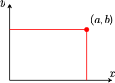

Section 8.4 More Operations on Fractions
Subsection Complex Fractions
A fraction that contains one or more fractions in either its numerator or its denominator or both is called a complex fraction. For example,
are complex fractions. Like simple fractions, complex fractions represent quotients. For the examples above,
and
We can always simplify a complex fraction into a standard algebraic fraction. One way to do this is to treat the fraction as a division.
Example 8.65.
Simplify \(~~\dfrac{\dfrac{2}{3}}{\dfrac{5}{6}}\)
First, Write the complex fraction as a quotient. Invert the divisor and multiply.
Checkpoint 8.66. Practice 1.
If the numerator or denominator of the complex fraction contains more than one term, there is an easier way to simplify the fraction that takes advantage of the fundamental principle of fractions.
Example 8.67.
Simplify \(~~\dfrac{\dfrac{1}{2x} - \dfrac{1}{x^2}}{\dfrac{1}{4} - \dfrac{1}{2x}}\)
This complex fraction contains the simple fractions \(\dfrac{1}{2x},~ \dfrac{1}{x^2},~ \dfrac{1}{4}\) and \(\dfrac{1}{2x}\text{.}\) The LCD of these fractions is \(4x^2\text{.}\) We multiply the numerator and denominator of the complex fraction by \(4x^2\text{.}\) Doing this will not change the value of the fraction, but will clear all the "smaller" fractions inside.
Then we apply the distributive law, so that we multiply each term of the numerator and each term of the denominator by \(\alert{4x^2}\text{.}\)
Finally, we reduce the result to obtain
We summarize the procedure for multiplying algebraic fractions as follows.
To simplify a complex fraction.
- Find the LCD of all the fraction contained in the complex fraction.
- Multiply the numerator and the denominator of the complex fraction by the LCD.
- Reduce the resulting simple fraction, if possible.
Checkpoint 8.68. Practice 2.
Subsection Negative Exponents
Algebraic fractions are sometimes written using negative exponents.
Example 8.69.
Write each expression as a single algebraic fraction.
- \(\displaystyle x^{-1}-y^{-1}\)
- \(\displaystyle (x^{-2}+y^{-2})^{-1}\)
-
We write each power as a fraction, then simplify.
\begin{align*} x^{-1}-y^{-1} \amp = \dfrac{1}{x} - \dfrac{1}{y} \amp \amp \blert{\text{The LCD is}~xy.}\\ \amp = \dfrac{1}{x} \cdot \blert{\dfrac{y}{y}}- \dfrac{1}{y} \cdot \blert{\dfrac{x}{x}} \amp \amp \blert{\text{Build to the LCD.}}\\ \amp = \dfrac{y-x}{xy} \end{align*} -
We simplify the expression inside parentheses first.
\begin{align*} \left(x^{-2}+y^{-2}\right)^{-1} \amp = \left(\dfrac{1}{x^2} + \dfrac{1}{y^2}\right)^{-1} \amp \amp \blert{\text{Add fractions.}}\\ \amp = \left(\dfrac{y^2+x^2}{x^2y^2}\right)^{-1} = \dfrac{x^2y^2}{x^2+y^2} \end{align*}For the last step, remember that a negative exponent indicates the reciprocal of its base.
Caution 8.70.
When working with fractions and exponents,it is important to avoid some tempting but incorrect algebraic operations.
-
In Example 3a, note that
\begin{equation*} \dfrac{1}{x} - \dfrac{1}{y} \ne \dfrac{1}{x-y} \end{equation*}For example, you can check that, for \(x=2\) and \(y=3\) ,
\begin{equation*} \dfrac{1}{2} - \dfrac{1}{3} \ne \dfrac{1}{2-3} = -1 \end{equation*} -
In Example 3b, note that
\begin{equation*} (x^{-2}+y^{-2})^{-1} \ne x^2+y^2 \end{equation*}The fourth law of exponents does not apply to sums and differences; that is,
\begin{equation*} (a+b)^n \ne a^n + b^n \end{equation*}
Checkpoint 8.71. Practice 3.
Checkpoint 8.72. QuickCheck 1.
Subsection Applications
Sometimes mathematics can help us solve problems when our intuition fails us or leads us astray.
Example 8.73.
On a weekday afternoon, when traffic is always horrible, Kathy left her home north of Los Angeles and drove south 120 miles along the San Diego Freeway to San Juan Capistrano. Her average speed was 40 miles per hour. She returned home on Saturday, at an average speed of 60 miles per hour. What was her average speed for the round trip?
If you said that the average speed is 50 miles per hour, you would be wrong! Let's do some calculations. Kathy's average speed for the round trip is given by
The total distance she drove is 240 miles, but to find the total time we must compute the time Kathy drove on each part of the trip. We use the formula \(d=rt\) and solve for \(t\text{.}\)
| \(~~~~\) | \(d\) | \(r\) | \(t\) |
| Driving south | \(120\) | \(40\) | \(3\) |
| Driving north | \(120\) | \(60\) | \(2\) |
The total time for the round trip was \(3+2 = 5\) hours, so Kathy's average speed was
Why does the average speed turn out to be less than 50 miles per hour? Because Kathy spent more time driving at 40 miles per hour (3 hours) than she did driving at 60 miles per hour (2 hours).
By generalizing the problem above we can find an algebraic formula for the average speed on a two-part trip. Suppose the distance traveled on the two parts of the trip are \(d_1\) and \(d_2\text{,}\) and the corresponding speeds on the two parts are \(r_1\) and \(r_2\text{.}\) We fill in the table to find the time required for each part.
| \(~~~~\) | Distance | Rate | Time |
| First part | \(d_1\) | \(r_1\) | \(\dfrac{d_1}{r_1}\) |
| Second part | \(d_2\) | \(r_2\) | \(\dfrac{d_2}{r_2}\) |
The total distance traveled on the trip is \(d_1+d_2\text{,}\) and the total time required is
Thus, the average speed for the entire trip is
Checkpoint 8.74. Practice 4.
Subsection Polynomial Division
Consider three improper fractions: \(\dfrac{8}{6},~ \dfrac{8}{4},\) and \(\dfrac{8}{3}\text{.}\) Can these fractions be simplified?
- We can reduce the first fraction: \(~\dfrac{8}{6} = \dfrac{4}{3}\)
- The second fraction reduces to a whole number: \(~\dfrac{8}{4} = \dfrac{2}{1} = 2\)
- The third fraction does not reduce, but by dividing the denominator into the numerator, we can write it as a whole number plus a proper fraction: \(~\dfrac{8}{3} = 2\dfrac{2}{3}\)
An algebraic fraction is "improper" if the degree of the numerator is greater than the degree of the denominator. If it cannot be reduced, we can simplify the expression by treating it as a division of polynomials. The quotient will be the sum of a polynomial and a simpler algebraic fraction.
If the divisor is a monomial, we can simply divide the monomial into each term of the numerator.
Example 8.75.
Divide \(\dfrac{9x^3 - 6x^2 + 4}{3x}\)
We divide \(3x\) into each term of the numerator.
Note that the quotient is the sum of a polynomial, \(3x^2 - 2x\text{,}\) and an algebraic fraction, \(\dfrac{4}{3x}\text{.}\)
Checkpoint 8.76. Practice 5.
If the denominator is not a monomial, we use a method similar to the long division algorithm used in arithmetic.
Example 8.77.
Divide \(~~\dfrac{2x^2+x-7}{x+3}\)
We first write the quotient as a division problem:
and divide \(2x^2\) (the first term of the numerator) by \(x\) (the first term of the denominator) to obtain \(2x\text{.}\) (It may be helpful to write down the division: \(\dfrac{2x^2}{2x}=x\text{.}\)) We write \(\alert{2x}\) above the quotient bar as the first term of the quotient, as shown below.
Next, we multiply \(x+3\) by \(2x\) to obtain \(2x^2 + 6x\text{,}\) and subtract this product from \(2x^2 + x - 7\text{:}\)
Repeating the process, we divide \(-5x\) by \(x\) to obtain \(-5\text{.}\) We write \(\alert{-5}\) as the second term of the quotient. Then we multiply \(x+3\) by \(-5\) to obtain \(-5x - 15\text{,}\) and subtract:
Because the degree of the remainder, 8, is less than the degree of \(x + 3\text{,}\) the division is finished. The quotient is \(2x - 5\text{,}\) with a remainder of \(8\text{.}\) We write the remainder as a fraction to obtain
When using polynomial division, it helps to write the polynomials in descending powers of the variable. If the numerator is missing any terms, we can insert terms with zero coefficients so that like powers will be aligned. For example, to perform the division
we first write the numerator in descending powers as \(4x^3 + 3x - 1\text{.}\) We insert \(0x^2\) between \(4x^3\) and \(3x\) and set up the quotient as
We then proceed as in Example 8.77. You can check that the quotient is
Checkpoint 8.78. Practice 6.
Checkpoint 8.79. QuickCheck 2.
Exercises Problem Set 8.4
Warm Up
1.
Add \(~\dfrac{x}{x-1} + \dfrac{x+2}{x}\)
2.
Subtract \(~\dfrac{x}{x-1} - \dfrac{x+2}{x}\)
3.
Multiply \(~\dfrac{x}{x-1} \cdot \dfrac{x+2}{x}\)
4.
Divide \(~\dfrac{x}{x-1} \div \dfrac{x+2}{x}\)
Skills Practice
For Problems 5â16, simplify the complex fraction.
5.
\(\dfrac{\dfrac{3x}{y}}{\dfrac{x}{2y^2}}\)
6.
\(\dfrac{\dfrac{4a}{5b^2}}{\dfrac{8a^3}{15b}}\)
7.
\(\dfrac{1-\dfrac{1}{6}}{2+\dfrac{2}{3}}\)8.
\(\dfrac{\dfrac{1}{2}+\dfrac{1}{3}}{\dfrac{1}{3}-\dfrac{1}{6}}\)9.
\(\dfrac{\dfrac{2}{a}+\dfrac{3}{2a}}{5+\dfrac{1}{a}}\)10.
\(\dfrac{1+\dfrac{2}{a}}{1-\dfrac{4}{a^2}}\)11.
\(\dfrac{4-\dfrac{1}{x^2}}{2-\dfrac{1}{x}}\)12.
\(\dfrac{1}{1-\dfrac{1}{q}}\)13.
\(\dfrac{n}{\dfrac{p}{q}+1}\)14.
\(\dfrac{h+\dfrac{h}{m}}{1+\dfrac{1}{m}}\)15.
\(\dfrac{\dfrac{u}{x}-\dfrac{v}{x}}{v}\)16.
\(\dfrac{\dfrac{x}{at}-V}{1-V\dfrac{x}{t}}\)For Problems 17â20, divide. Write your answer as the sum of a polynomial and an algebraic fraction.
17.
\(\dfrac{6x^4-6x^2-4}{12x^2}\)18.
\(\dfrac{3n^3-3n^2+2n-3}{3n^2}\)19.
\(\dfrac{2x^2y^2-4xy^2+6xy}{2xy^2}\)20.
\(\dfrac{15s^{10}-21s^5+6}{-3s^2}\)For Problems 21â24, use polynomial division to write the quotient as the sum of a polynomial and an algebraic fraction.
21.
\(\dfrac{4y^2+12y+7}{2y+1} \)22.
\(\dfrac{x^3+2x^2+x+1}{x-2}\)23.
\(\dfrac{4z^2+5z+8z^4+3}{2z+1}\)24.
\(\dfrac{x^4-1}{x^2-2}\)Applications
25.
On the figure at right, locate the points \(P\left(\dfrac{a}{2},0\right)\text{,}\) \(Q\left(a, \dfrac{b}{2}\right)\text{,}\) \(~R\left(\dfrac{a}{2},b\right)\text{,}\) and \(~S\left(0,\dfrac{b}{2}\right)\text{.}\) Connect the points with line segments in the order \(PQRS\) to form a four-sided figure.
- Compute the slopes of each side of the figure.
26.
- Suppose \(x\) and \(y\) are two positive numbers. Write an expression for their average, and then for the reciprocal of their average.
- For the same numbers \(x\) and \(y\text{,}\) write an expression for the average of their reciprocals.
- Are your expressions in parts (a) and (b) the same? Choose values for \(x\) and \(y\) and evaluate both expressions.
27.
The focal length of a lens is given by the formula
where \(f\) stands for the focal length, \(p\) is the distance from the object viewed to the lens, and \(q\) is the distance from the image to the lens. Suppose you estimate that the distance from your cat (the object viewed) to your camera lens is 60 inches greater than the distance from the lens to the film inside the camera, where the image forms.
Express \(1/f\) as a single fraction in terms of \(q\text{.}\)
Write and simplify an expression for \(f\) as a function of \(q\text{.}\)
28.
Andy drives 300 miles to Lake Tahoe at 70 miles per hour and returns home at 50 miles per hour. What is his average speed for the round trip? (It is not 60 miles per hour!)
- Write expressions for the time it takes for each leg of the trip if Andy drives a distance \(d\) at speed \(r_1\) and returns at speed \(r_2\text{.}\)
- Write expressions for the total distance and total time for the trip.
- Write an expression for the average speed for the entire trip.
- Write your answer to part (c) as a simple fraction.
- Use your formula to answer the question stated in the problem.
For Problems 29â36, Write each expression as a single fraction in simplest form.
29.
\(\left(1-\dfrac{k}{n}\right) \left(1+ \dfrac{k}{n}\right)\)30.
\(m\left(\dfrac{v-V}{t}\right)\left(\dfrac{v+V}{2}\right)\)31.
\(\dfrac{2d}{c} \cdot \dfrac{1}{1-\left(\dfrac{u}{c}\right)^2}\)32.
\(\dfrac{1}{\dfrac{1}{n}\left(\dfrac{1}{n}-1\right)}\)33.
\(\dfrac{\dfrac{L}{F}}{\dfrac{L}{F}-1} \cdot \dfrac{K}{N}\)34.
\(b\left(\dfrac{a-b}{a+b}\right) +b\)35.
\(\dfrac{1-\dfrac{2h}{m}}{m-\dfrac{4h^2}{m}} \)36.
\(\dfrac{\dfrac{6}{h+2}-\dfrac{3}{h}}{\dfrac{4}{h}-\dfrac{3}{h+2}} \)For Problems 37â42, write each expression as a single fraction in simplest form.
37.
\(x^{-2}+y^{-2}\)38.
\(2w^{-1}-(2w)^{-2}\)39.
\(a^{-1}b-ab^{-1}\)40.
\((x^{-1}+y^{-1})^{-1}\)41.
\((1-xy^{-1})^{-1}\)42.
\(\dfrac{a^{-1}+b^{-1}}{(ab)^{-1}}\)For Problems 43-48, write each complex fraction as a simple fraction in lowest terms, and rationalize the denominator.